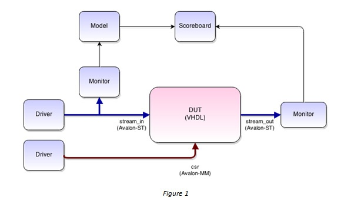

The future of EDA?
Posted by Chris Higgs in Blog
This is a cross-post, originally published on the Aldec blog.
I'm not the first engineer to suggest that utilising Python for verification could be a big leap forward for the EDA industry. The big vendors haven't (yet) embraced this suggestion, so why am I still convinced Python is the way forward? If so few people in EDA are using Python for verification, can it really help an engineer trying to solve real-world problems?
I've spent over a year trying to make it as easy as possible to test RTL designs using Python, in this blog post I'd like to show you why I believe Python can make us more productive.
What can you achieve in 10 lines of code?
A higher level of abstraction allows us to do more with less code. Because there's less boilerplate to write, engineers can focus their time on the code that counts.
Let's take a realistic example - some VHDL which takes Ethernet frames as the input and outputs any UDP payload matching the filter, dropping everything else. This block uses Avalon-ST interfaces for the data path and has some configuration registers exposed through an Avalon-MM interface.
We want to create a structured transaction-based testbench with drivers and monitors for all the interfaces and a scoreboard that checks the output. The drivers are essentially BFMs, taking transactions and converting them to pin-wiggles over time. The monitors observe the pins and recreate transactions. A model is used to take recovered transactions and predict the expected output, as shown in figure 1.
Using the open-source Cocotb Python framework, we could write the following:
class UDPFilterTB(object):
def __init__(self, dut):
self.dut = dut
self.stream_in = AvalonSTDriver(dut, "stream_in", dut.clk)
self.stream_out = AvalonSTMonitor(dut, "stream_out", dut.clk)
self.csr = AvalonMaster(dut, "csr", dut.clk)
# Create a scoreboard to check the output of the stream_out interface
self.expected_output = []
self.scoreboard = Scoreboard(dut)
self.scoreboard.add_interface(self.stream_out, self.expected_output)
# Reconstruct the input transactions from the pins and send them to our model
self.snooper = AvalonSTMonitor(dut, "stream_in", dut.clk, callback=self.model)
In just 10 lines of code we've created a powerful structured testbench!
But surely some wrapper code is required to connect the Python testbench to the VHDL? This is where the "increased abstraction" comes in. Cocotb abstracts away the interface between Python and the VHDL or Verilog being simulated, so that no wrapper is required. In fact no code is required except the RTL to be tested and the Python snippet above.
Modelling made easy
We've also seen an example of reuse in the code above, taking advantage of the Avalon support built-in to Cocotb, but what about the model function that is required to determine whether the RTL is behaving correctly? Can Python help us there?
Using a packet library called Scapy, our initial model becomes straightforward:
def model(self, snooped_data_in):
pkt = Ether(snooped_data_in)
if UDP in pkt:
self.expected_output.append(str(pkt[UDP].payload))
Our first test
So a testbench is easy to create, but what about actual tests? Perhaps we have some PCAP files containing captured Ethernet packets and want to use these as stimulus for our testbench - we could write the following:
@cocotb.test()
def pcap_replay(dut, fname="stimulus.pcap"):
cocotb.fork(Clock(dut.clk, 5000).start())
tb = UDPFilterTB(dut)
dut.stream_out_ready = 1
for pkt in PcapReader(fname):
yield tb.stream_in.send(str(pkt))
In the space of a few minutes and with fewer than 25 lines of code we've created a structured testbench and a model and written a test that can take PCAP files and send them through the testbench.
In summary
We've seen how to take advantage of Python and Cocotb to create complex testbenches with minimal effort. We've seen how reusing third-party libraries can save us significant amounts of time.
Whatever your target application and particular requirements, whether image processing or high-energy physics, writing directed tests or using constrained randomisation, building stand-alone testbenches or modelling interaction with external systems or emulators, it's likely that Python could help you achieve your goals.